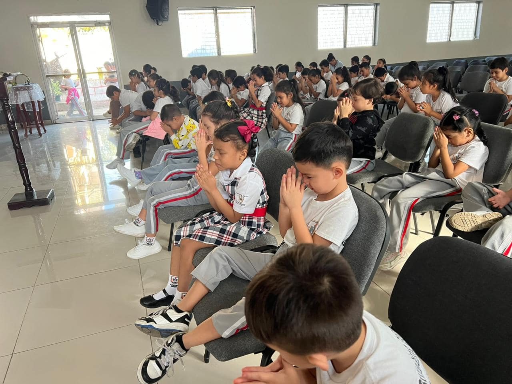
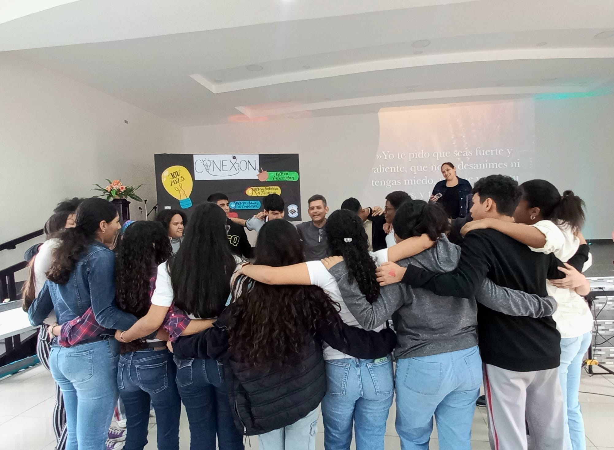
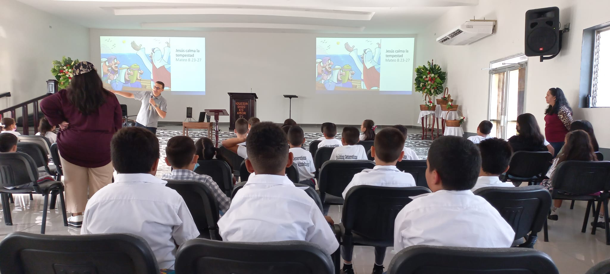
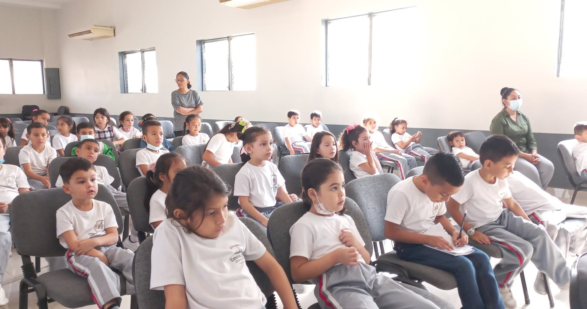

DEVOCIONALES
VOLVER AL MENU
INICIO
¿QUIENES SOMOS?
Historia Catalina Landis
Mision y Vision
Reglamento
ACTIVIDADES
Campamento
Aniversario
Devocionales
GALERIA
TEST VOCACIONAL
En una escuela y colegio cristiano uno de sus propósitos es
predicar la palabra de Dios y para eso usamos el tiempo del
devocional que es un espacio para predicar de Dios con temas
acorde a las necesidades de los jóvenes y niños. Los devocionales
son los días viernes divididos en tres grupos; el primer grupo es
preescolar hasta tercer grado, el segundo grupo de cuarto grado hasta sexto grado
y el tercer grupo de séptimo hasta noveno grado junto con los alumnos del IDEC.
El propósito es alabar a Dios y escuchar su palabra presentando un
mensaje apropiado para las edades de nuestros niños y adolescentes.



